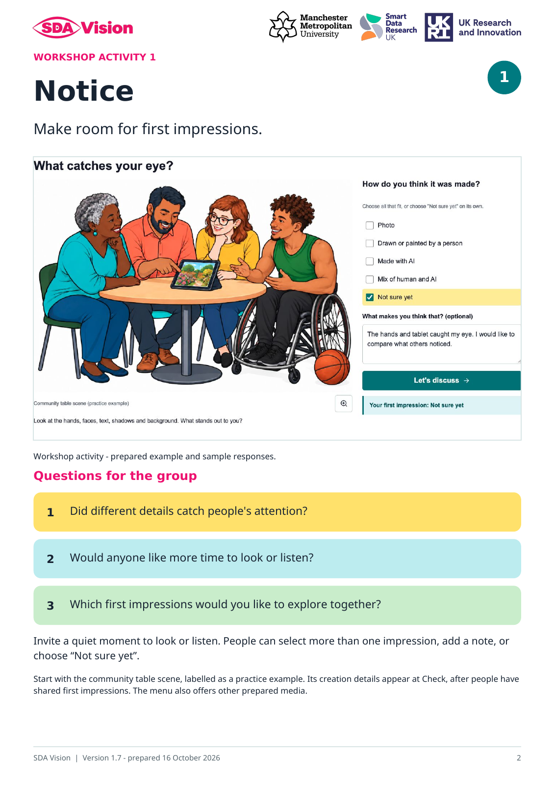
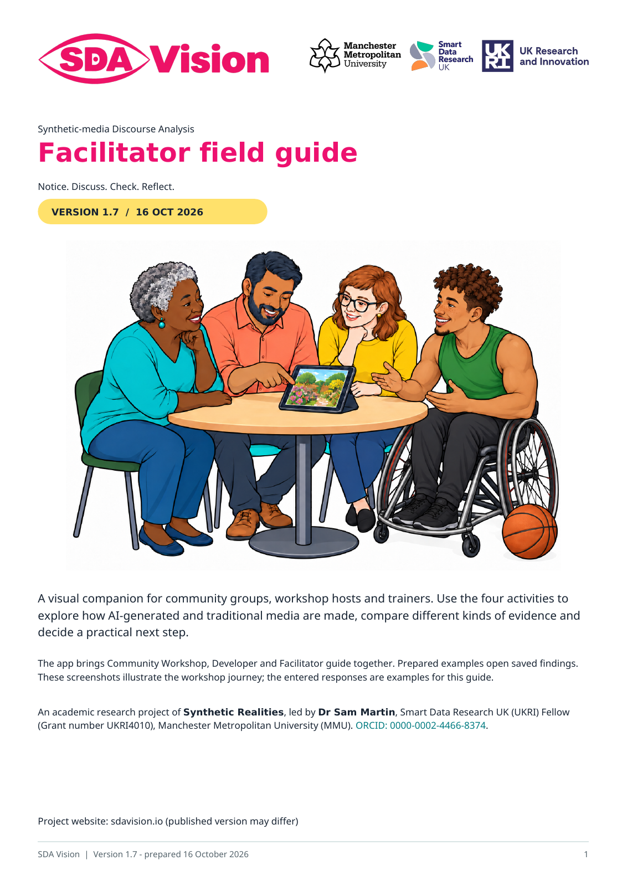
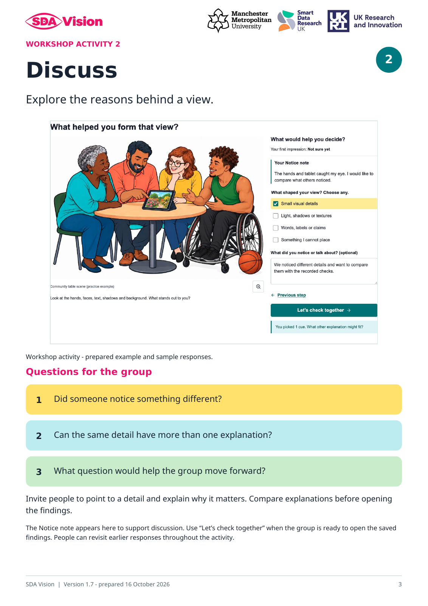
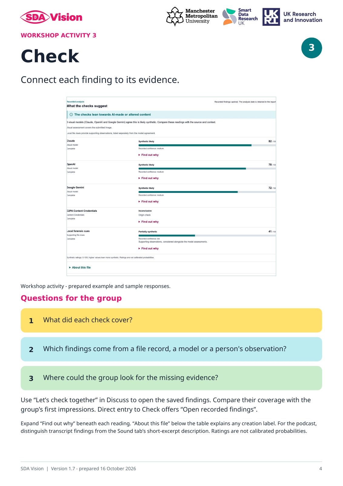
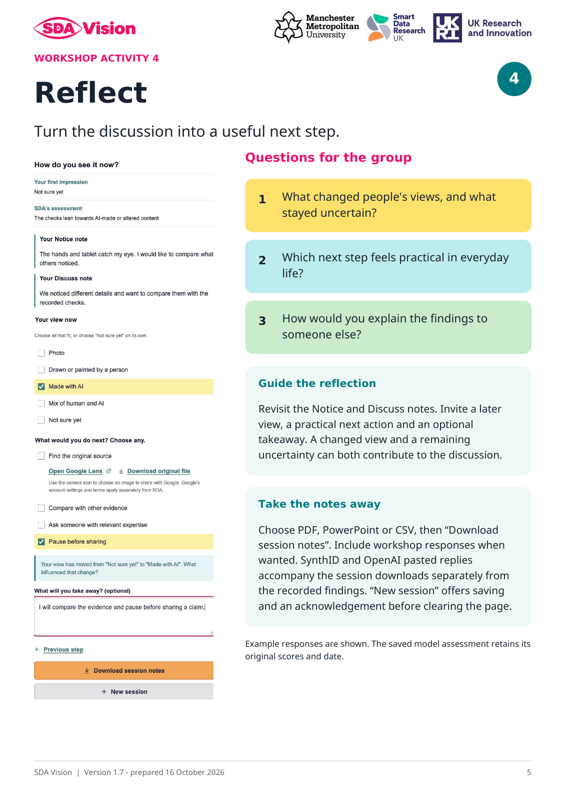
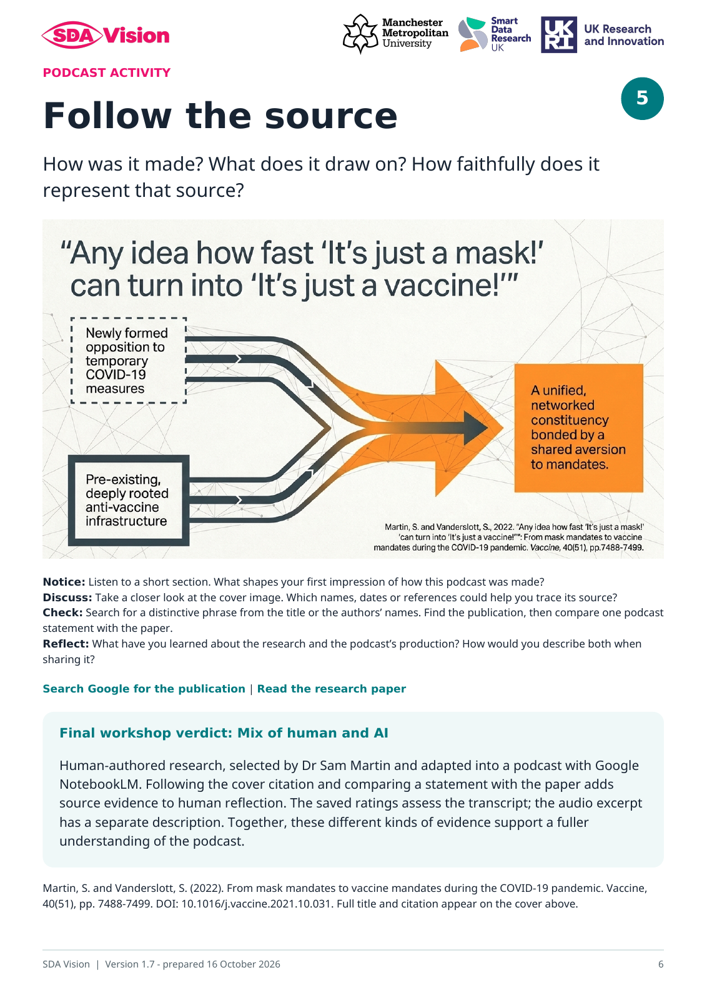
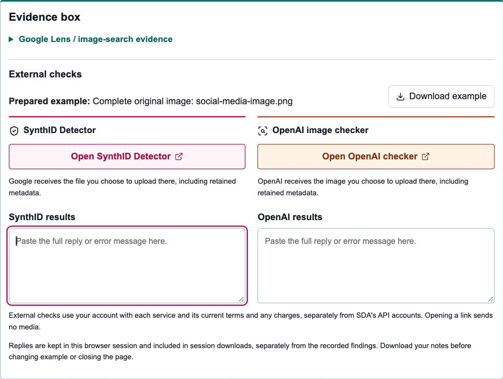

Workshop Activity 1
Notice
Make room for first impressions. Give people time to look or listen, choose a response and explain what caught their attention.

Open Activity 1 preview in a new tabExplore and make sense of AI-generated and traditional media together.
An illustrated companion to SDA Vision (Synthetic-media Discourse Analysis) for people leading thoughtful conversations about how AI-generated and traditional media are made, what the evidence shows and what to do next.
For community facilitators, trainers, educators and researchers running workshops, conference sessions or online discussions. Use the guide alongside SDA Vision’s Community Workshop, adapting the questions to your group.

The guide combines screenshots, colourful discussion prompts and facilitation notes. The public website provides prepared media and saved results, so the group can concentrate on interpreting the evidence. Prepared examples are selected for workshop discussion. Their source credits and recorded findings support the group’s interpretation.
These are all four activity pages from the version 1.7 guide. Open a preview to see it at full size.
Workshop Activity 1
Make room for first impressions. Give people time to look or listen, choose a response and explain what caught their attention.

Open Activity 1 preview in a new tabWorkshop Activity 2
Explore the reasons behind a view. Invite people to point to details and compare explanations before opening the findings.

Open Activity 2 preview in a new tabWorkshop Activity 3
Connect each finding to its evidence and the part of the media it covers.

Open Activity 3 preview in a new tabWorkshop Activity 4
Compare first impressions with later views and choose a practical next step.

Open Activity 4 preview in a new tabExplore how a podcast was made, what research it draws on and how faithfully it represents that source. Record first impressions before following clues in the cover image. At Check, use the Google text-search link, compare a statement with the paper and open the source reveal when ready.
Final workshop verdict: Mix of human and AI. Dr Sam Martin selected human-authored research and adapted it into a podcast with NotebookLM. Source searching and comparison with the paper add context to the recorded transcript ratings and separate audio description, supporting a fuller Human–AI reflection. The guide includes the activity and this source-informed conclusion.

Open the recorded findings at Check. SynthID Detector and the OpenAI image checker now sit together in the Evidence box, each with a visible paste-results box. On narrow screens they stack. The dedicated Detector replaces the former Gemini chat shortcut in this recorded demo.
Invite the group to ask: Which file or part does the reply cover? What does it add to the source and model findings? What would we include when sharing our interpretation?

For facilitators: choose prepared examples covered by your session arrangements. Check service access and current file limits in advance if you plan a live external check. A demonstration or previously recorded reply offers a route for people who prefer not to use an external account. The demo's model findings remain pre-recorded.
Already have a reply? In Check, find External checks in the Evidence box. Paste the complete text into SynthID results or OpenAI results. Your text is kept immediately in this browser session; no upload back into SDA or extra save form is needed.
For documents: select Material for SynthID when offered, then Download selected image. Paste with the same page or slide selected; each has its own SynthID reply. Keep the complete document alongside it. The OpenAI shortcut is enabled for image examples only; a separately checked image reply can be kept in its box with a page or frame name.
Before an external upload: Google receives the file chosen in SynthID Detector; OpenAI receives the image chosen in its checker, including retained metadata. Each uses your account there, its current terms and any charges, separately from SDA's API accounts. Opening a link sends no media. Use the prepared example agreed for the activity, or follow the facilitator's demonstration.
Pasted replies accompany session downloads separately from the recorded model scores. SDA keeps the text entered; it does not independently confirm what was submitted or the service's response. A skipped check can leave its box empty.
The eight-page PDF includes an introduction, all four workshop activities, podcast source exploration, the paired external-check workflow and guidance for bringing the discussion together. Save a copy for preparation, printing or use alongside a shared screen. A separate one-page participant sheet accompanies this edition.
Version 1.7 · 16 October 2026 · 8 pagesAn academic research project of Synthetic Realities, led by Dr Sam Martin, Smart Data Research UK (UKRI) Fellow (Grant number UKRI4010), Manchester Metropolitan University (MMU). ORCID: 0000-0002-4466-8374.